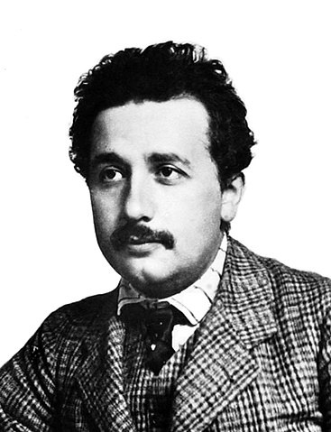
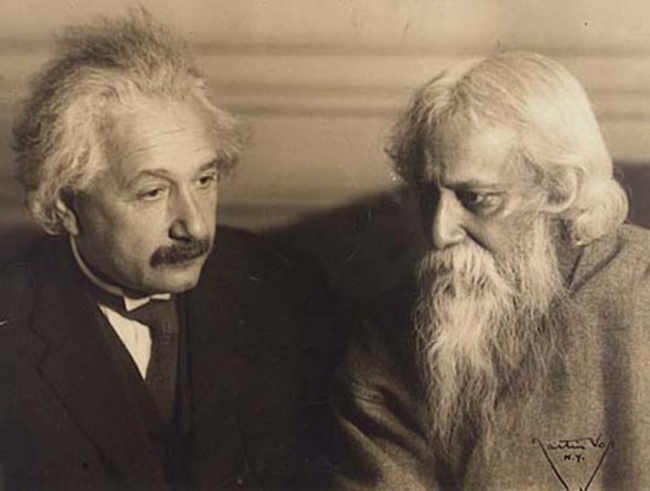
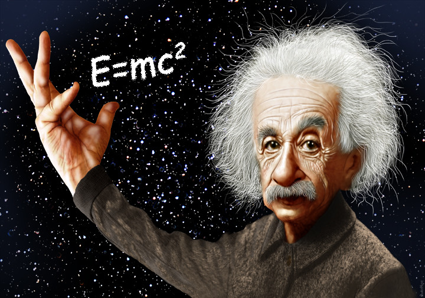
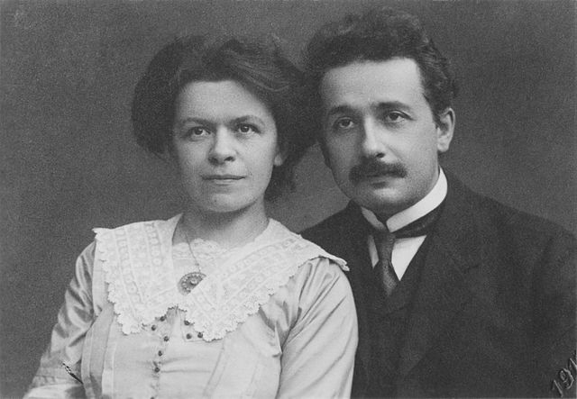
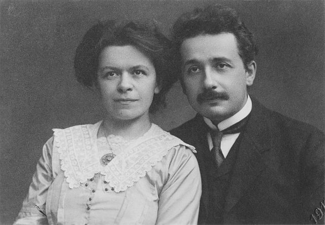

Albert Einstein (/ˈaɪnstaɪn/ EYEN-styne;German: [ˈalbɛʁt ˈʔaɪnʃtaɪn] (About this soundlisten); 14 March 1879 – 18 April 1955) was a German-born theoretical physicist who developed the theory of relativity, one of the two pillars of modern physics (alongside quantum mechanics).274 His work is also known for its influence on the philosophy of science.He is best known to the general public for his mass–energy equivalence formula E = mc2, which has been dubbed "the world's most famous equation".He received the 1921 Nobel Prize in Physics "for his services to theoretical physics, and especially for his discovery of the law of the photoelectric effect",a pivotal step in the development of quantum theory.The son of a salesman who later operated an electrochemical factory, Einstein was born in the German Empire but moved to Switzerland in 1895 and renounced his German citizenship in 1896.Specializing in physics and mathematics, he received his academic teaching diploma from the Swiss Federal Polytechnic School (German: eidgenössische polytechnische Schule, later ETH) in Zürich in 1900. The following year, he acquired Swiss citizenship, which he kept for his entire life. After initially struggling to find work, from 1902 to 1909 he was employed as a patent examiner at the Swiss Patent Office in Bern.Near the beginning of his career, Einstein thought that Newtonian mechanics was no longer enough to reconcile the laws of classical mechanics with the laws of the electromagnetic field. This led him to develop his special theory of relativity during his time at the Swiss Patent Office. In 1905, called his annus mirabilis (miracle year), he published four groundbreaking papers, which attracted the attention of the academic world; the first outlined the theory of the photoelectric effect, the second paper explained Brownian motion, the third paper introduced special relativity, and the fourth mass-energy equivalence. That year, at the age of 26, he was awarded a PhD by the University of Zurich.Although initially treated with skepticism from many in the scientific community, Einstein's works gradually came to be recognised as significant advancements. He was invited to teach theoretical physics at the University of Bern in 1908 and the following year moved to the University of Zurich, then in 1911 to Charles University in Prague before returning to the Federal Polytechnic School in Zürich in 1912. In 1914, he was elected to the Prussian Academy of Sciences in Berlin, where he remained for 19 years. Soon after publishing his work on special relativity, Einstein began working to extend the theory to gravitational fields; he then published a paper on general relativity in 1916, introducing his theory of gravitation. He continued to deal with problems of statistical mechanics and quantum theory, which led to his explanations of particle theory and the motion of molecules. He also investigated the thermal properties of light and the quantum theory of radiation, the basis of laser, which laid the foundation of the photon theory of light. In 1917, he applied the general theory of relativity to model the structure of the universe.In 1933, while Einstein was visiting the United States, Adolf Hitler came to power. Because of his Jewish background, Einstein did not return to Germany.[13] He settled in the United States and became an American citizen in 1940.[14] On the eve of World War II, he endorsed a letter to President Franklin D. Roosevelt alerting FDR to the potential development of "extremely powerful bombs of a new type" and recommending that the US begin similar research. This eventually led to the Manhattan Project. Einstein supported the Allies, but he generally denounced the idea of using nuclear fission as a weapon. He signed the Russell–Einstein Manifesto with British philosopher Bertrand Russell, which highlighted the danger of nuclear weapons. He was affiliated with the Institute for Advanced Study in Princeton, New Jersey, until his death in 1955.He published more than 300 scientific papers and more than 150 non-scientific works.His intellectual achievements and originality have made the word "Einstein" synonymous with "genius".Eugene Wigner compared him to his contemporaries, writing that "Einstein's understanding was deeper even than Jancsi von Neumann's. His mind was both more penetrating and more original".Albert Einstein was born in Ulm, in the Kingdom of Württemberg in the German Empire, on 14 March 1879. His parents were Hermann Einstein, a salesman and engineer, and Pauline Koch. In 1880, the family moved to Munich, where Einstein's father and his uncle Jakob founded Elektrotechnische Fabrik J. Einstein & Cie, a company that manufactured electrical equipment based on direct current.The Einsteins were non-observant Ashkenazi Jews, and Albert attended a Catholic elementary school in Munich, from the age of 5, for three years. At the age of 8, he was transferred to the Luitpold Gymnasium (now known as the Albert Einstein Gymnasium), where he received advanced primary and secondary school education until he left the German Empire seven years later.In 1894, Hermann and Jakob's company lost a bid to supply the city of Munich with electrical lighting because they lacked the capital to convert their equipment from the direct current (DC) standard to the more efficient alternating current (AC) standard. The loss forced the sale of the Munich factory. In search of business, the Einstein family moved to Italy, first to Milan and a few months later to Pavia. When the family moved to Pavia, Einstein, then 15, stayed in Munich to finish his studies at the Luitpold Gymnasium. His father intended for him to pursue electrical engineering, but Einstein clashed with authorities and resented the school's regimen and teaching method. He later wrote that the spirit of learning and creative thought was lost in strict rote learning. At the end of December 1894, he traveled to Italy to join his family in Pavia, convincing the school to let him go by using a doctor's note.During his time in Italy he wrote a short essay with the title "On the Investigation of the State of the Ether in a Magnetic Field".Einstein always excelled at math and physics from a young age, reaching a mathematical level years ahead of his peers. The twelve-year-old Einstein taught himself algebra and Euclidean geometry over a single summer. Einstein also independently discovered his own original proof of the Pythagorean theorem at age 12.A family tutor Max Talmud says that after he had given the 12-year-old Einstein a geometry textbook, after a short time "[Einstein] had worked through the whole book. He thereupon devoted himself to higher mathematics... Soon the flight of his mathematical genius was so high I could not follow." His passion for geometry and algebra led the twelve-year-old to become convinced that nature could be understood as a "mathematical structure". Einstein started teaching himself calculus at 12, and as a 14-year-old he says he had "mastered integral and differential calculus".At age 13, when he had become more seriously interested in philosophy (and music),Einstein was introduced to Kant's Critique of Pure Reason, and Kant became his favorite philosopher, his tutor stating: "At the time he was still a child, only thirteen years old, yet Kant's works, incomprehensible to ordinary mortals, seemed to be clear to him.In 1895, at the age of 16, Einstein took the entrance examinations for the Swiss Federal Polytechnic School in Zürich (later the Eidgenössische Technische Hochschule, ETH). He failed to reach the required standard in the general part of the examination,[28] but obtained exceptional grades in physics and mathematics.[29] On the advice of the principal of the polytechnic school, he attended the Argovian cantonal school (gymnasium) in Aarau, Switzerland, in 1895 and 1896 to complete his secondary schooling. While lodging with the family of professor Jost Winteler, he fell in love with Winteler's daughter, Marie. Albert's sister Maja later married Winteler's son Paul.[30] In January 1896, with his father's approval, Einstein renounced his citizenship in the German Kingdom of Württemberg to avoid military service.In September 1896, he passed the Swiss Matura with mostly good grades, including a top grade of 6 in physics and mathematical subjects, on a scale of 1–6.At 17, he enrolled in the four-year mathematics and physics teaching diploma program at the Zürich polytechnic school. Marie Winteler, who was a year older, moved to Olsberg, Switzerland, for a teaching post.Einstein's future wife, a 20-year-old Serbian named Mileva Marić, also enrolled at the polytechnic school that year. She was the only woman among the six students in the mathematics and physics section of the teaching diploma course. Over the next few years, Einstein's and Marić's friendship developed into romance, and they read books together on extra-curricular physics in which Einstein was taking an increasing interest. In 1900, Einstein passed the exams in Maths and Physics and was awarded the Federal teaching diploma.There have been claims that Marić collaborated with Einstein on his 1905 papers, known as the Annus Mirabilis papers, but historians of physics who have studied the issue find no evidence that she made any substantive contributions.Early correspondence between Einstein and Marić was discovered and published in 1987 which revealed that the couple had a daughter named "Lieserl", born in early 1902 in Novi Sad where Marić was staying with her parents. Marić returned to Switzerland without the child, whose real name and fate are unknown. The contents of Einstein's letter in September 1903 suggest that the girl was either given up for adoption or died of scarlet fever in infancy.
Marriages and children
Early correspondence between Einstein and Marić was discovered and published in 1987 which revealed that the couple had a daughter named "Lieserl", born in early 1902 in Novi Sad where Marić was staying with her parents. Marić returned to Switzerland without the child, whose real name and fate are unknown. The contents of Einstein's letter in September 1903 suggest that the girl was either given up for adoption or died of scarlet fever in infancy.
Patent office
After graduating in 1900, Einstein spent almost two frustrating years searching for a teaching post. He acquired Swiss citizenship in February 1901,[63] but for medical reasons was not conscripted. With the help of Marcel Grossmann's father, he secured a job in Bern at the Federal Office for Intellectual Property, the patent office,[64][65] as an assistant examiner –Einstein evaluated patent applications for a variety of devices including a gravel sorter and an electromechanical typewriter.[67] In 1903, his position at the Swiss Patent Office became permanent, although he was passed over for promotion until he "fully mastered machine technology".Much of his work at the patent office related to questions about transmission of electric signals and electrical–mechanical synchronization of time, two technical problems that show up conspicuously in the thought experiments that eventually led Einstein to his radical conclusions about the nature of light and the fundamental connection between space and time.Einstein evaluated patent applications for a variety of devices including a gravel sorter and an electromechanical typewriter.[67] In 1903, his position at the Swiss Patent Office became permanent, although he was passed over for promotion until he "fully mastered machine technology".Much of his work at the patent office related to questions about transmission of electric signals and electrical–mechanical synchronization of time, two technical problems that show up conspicuously in the thought experiments that eventually led Einstein to his radical conclusions about the nature of light and the fundamental connection between space and time

With a few friends he had met in Bern, Einstein started a small discussion group in 1902, self-mockingly named "The Olympia Academy", which met regularly to discuss science and philosophy. Their readings included the works of Henri Poincaré, Ernst Mach, and David Hume, which influenced his scientific and philosophical outlook.
First scientific papers
In 1900, Einstein's paper "Folgerungen aus den Capillaritätserscheinungen" ("Conclusions from the Capillarity Phenomena") was published in the journal Annalen der Physik. On 30 April 1905, Einstein completed his thesis,[72] with Alfred Kleiner, Professor of Experimental Physics, serving as pro-forma advisor. As a result, Einstein was awarded a PhD by the University of Zürich, with his dissertation A New Determination of Molecular Dimensions.Also in 1905, which has been called Einstein's annus mirabilis (amazing year), he published four groundbreaking papers, on the photoelectric effect, Brownian motion, special relativity, and the equivalence of mass and energy, which were to bring him to the notice of the academic world, at the age of 26.
Academic career
Einstein became a full professor at the German Charles-Ferdinand University in Prague in April 1911, accepting Austrian citizenship in the Austro-Hungarian Empire to do so.[76][77] During his Prague stay, he wrote 11 scientific works, five of them on radiation mathematics and on the quantum theory of solids. In July 1912, he returned to his alma mater in Zürich. From 1912 until 1914, he was a professor of theoretical physics at the ETH Zurich, where he taught analytical mechanics and thermodynamics. He also studied continuum mechanics, the molecular theory of heat, and the problem of gravitation, on which he worked with mathematician and friend Marcel Grossmann.On 3 July 1913, he was voted for membership in the Prussian Academy of Sciences in Berlin. Max Planck and Walther Nernst visited him the next week in Zurich to persuade him to join the academy, additionally offering him the post of director at the Kaiser Wilhelm Institute for Physics, which was soon to be established.[79] Membership in the academy included paid salary and professorship without teaching duties at the Humboldt University of Berlin. He was officially elected to the academy on 24 July, and he accepted to move to the German Empire the next year. His decision to move to Berlin was also influenced by the prospect of living near his cousin Elsa, with whom he had developed a romantic affair. He joined the academy and thus the Berlin University on 1 April 1914.[80] As World War I broke out that year, the plan for Kaiser Wilhelm Institute for Physics was aborted. The institute was established on 1 October 1917, with Einstein as its director.[81] In 1916, Einstein was elected president of the German Physical Society (1916–1918).Based on calculations Einstein made in 1911, about his new theory of general relativity, light from another star should be bent by the Sun's gravity. In 1919, that prediction was confirmed by Sir Arthur Eddington during the solar eclipse of 29 May 1919. Those observations were published in the international media, making Einstein world-famous. On 7 November 1919, the leading British newspaper The Times printed a banner headline that read: "Revolution in Science – New Theory of the Universe – Newtonian Ideas Overthrown".In 1920, he became a Foreign Member of the Royal Netherlands Academy of Arts and Sciences.[84] In 1922, he was awarded the 1921 Nobel Prize in Physics "for his services to Theoretical Physics, and especially for his discovery of the law of the photoelectric effect".[10] While the general theory of relativity was still considered somewhat controversial, the citation also does not treat even the cited photoelectric work as an explanation but merely as a discovery of the law, as the idea of photons was considered outlandish and did not receive universal acceptance until the 1924 derivation of the Planck spectrum by S. N. Bose. Einstein was elected a Foreign Member of the Royal Society (ForMemRS) in 1921.[3] He also received the Copley Medal from the Royal Society in 1925
Contents
- Life and career
- Scientific career
- Non-scientific legacy
- In popular culture
- Awards and honors
- Further reading




.jpg) 
